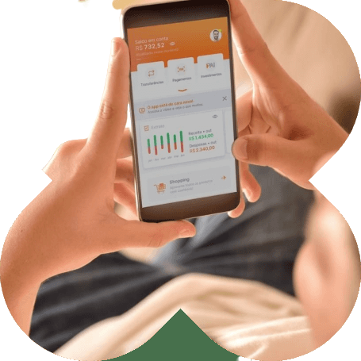

F4BANK
A revolução financeira na palma da sua mão.
Sem complexidade, burocracias e aquele jeito antigo de lidar com dinheiro.

Quem Somos
O F4BANK é mais que um banco digital.
É a revolução financeira na palma da sua mão.
Lançado em 2022, o F4BANK é um cartão de crédito sem anuidade e juros, com rendimento maior que a poupança,
TED gratuito, integrada ao pix, com pagamento
de boletos e contas.
Ah, também possibilitamos saques em caixas eletrônicos da rede Banco24horas apenas com o celular.

Nossos Serviços